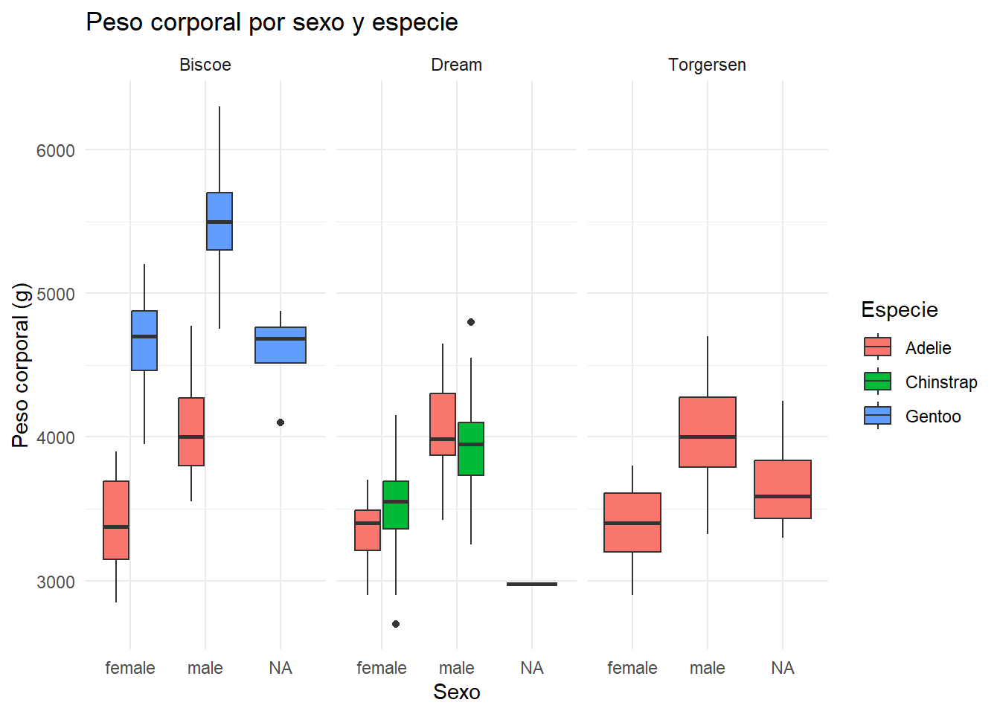
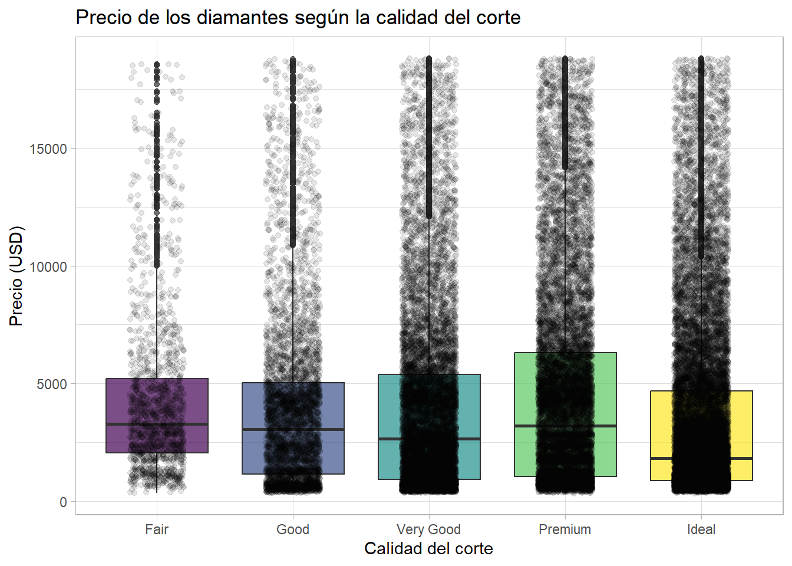

Ejercicio 1: ¿Existe dimorfismo sexual en los pingüinos?
Los machos y las hembras de muchas especies presentan diferencias de tamaño. Usando el conjunto de datos penguins, investiga si el peso corporal de los pingüinos parece diferir entre sexos y especies. Construye una gráfica que cumpla con lo siguiente:
Compara la variable body_mass entre machos y hembras.
Distingue las especies mediante color.
Elige una geometría apropiada para comparar distribuciones.
Separa la gráfica por isla usando facetas.
Personaliza el título, etiquetas y tema.
A partir de la gráfica, responde:
¿Los machos parecen pesar más que las hembras?
¿La diferencia es similar en las tres especies?
Solución
Code
library(ggplot2)ggplot( penguins, aes( x = sex, y = body_mass, fill = species ) ) +geom_boxplot() +facet_wrap(~ island) +labs( title ="Peso corporal por sexo y especie", x ="Sexo", y ="Peso corporal (g)", fill ="Especie" ) +theme_minimal()

En general, los machos presentan un mayor peso corporal que las hembras. Además, existen diferencias entre especies y entre islas.
Ejercicio 2:¿Los diamantes de mejor calidad son más caros?
El conjunto de datos diamonds, incluido en ggplot2, contiene información sobre más de 50,000 diamantes.
Construye una gráfica que permita explorar la relación entre la calidad del corte (cut) y el precio (price).
La gráfica debe:
Comparar la distribución de precios entre las categorías de cut.
Utilizar una geometría adecuada para comparar distribuciones.
Mostrar también las observaciones individuales.
Personalizar el título y las etiquetas de los ejes.
Elegir un tema diferente al predeterminado.
Responder:
¿Los diamantes con mejor corte son necesariamente más caros?
¿Existe mucha variabilidad dentro de cada categoría?
Solución
Code
ggplot( diamonds,aes(x = cut,y = price,fill = cut )) +geom_boxplot(alpha =0.7) +geom_jitter(alpha =0.1,width =0.2 ) +labs(title ="Precio de los diamantes según la calidad del corte",x ="Calidad del corte",y ="Precio (USD)" ) +theme_light() +theme(legend.position ="none" )

La gráfica muestra una gran variabilidad en los precios. Aunque las categorías de mejor calidad tienden a tener precios altos, existe un traslape considerable entre las distribuciones.